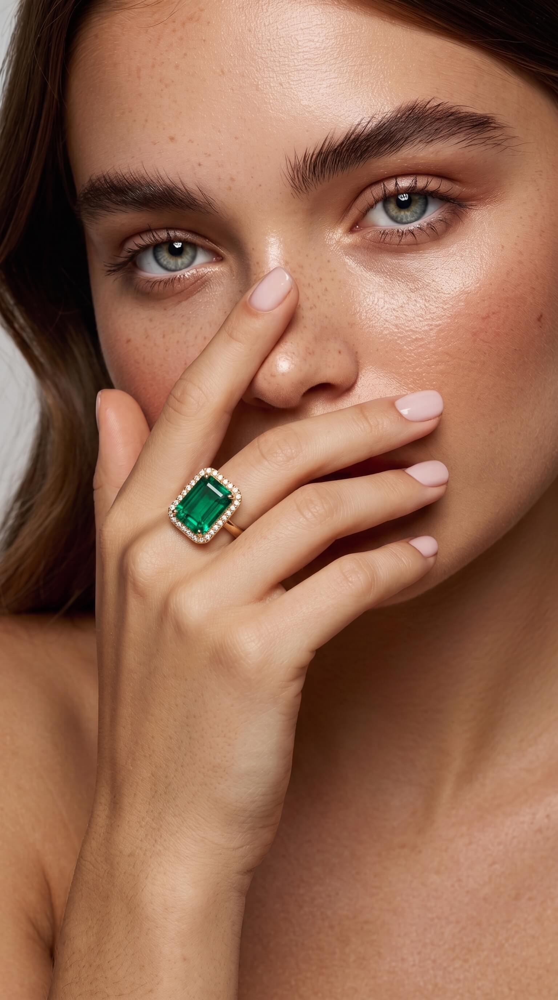
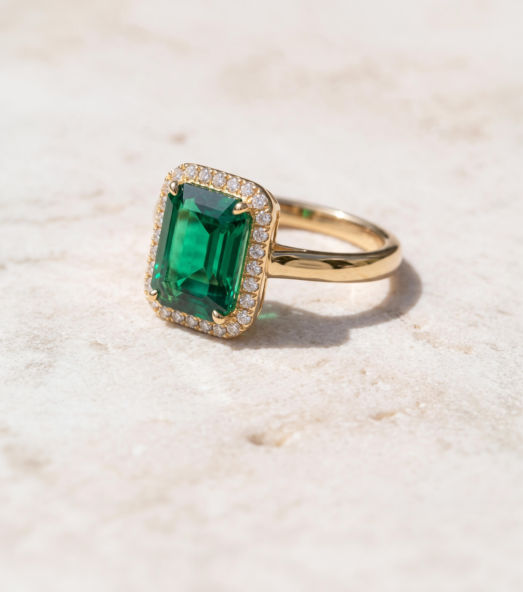
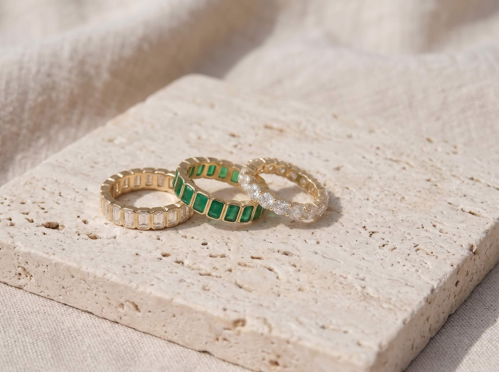
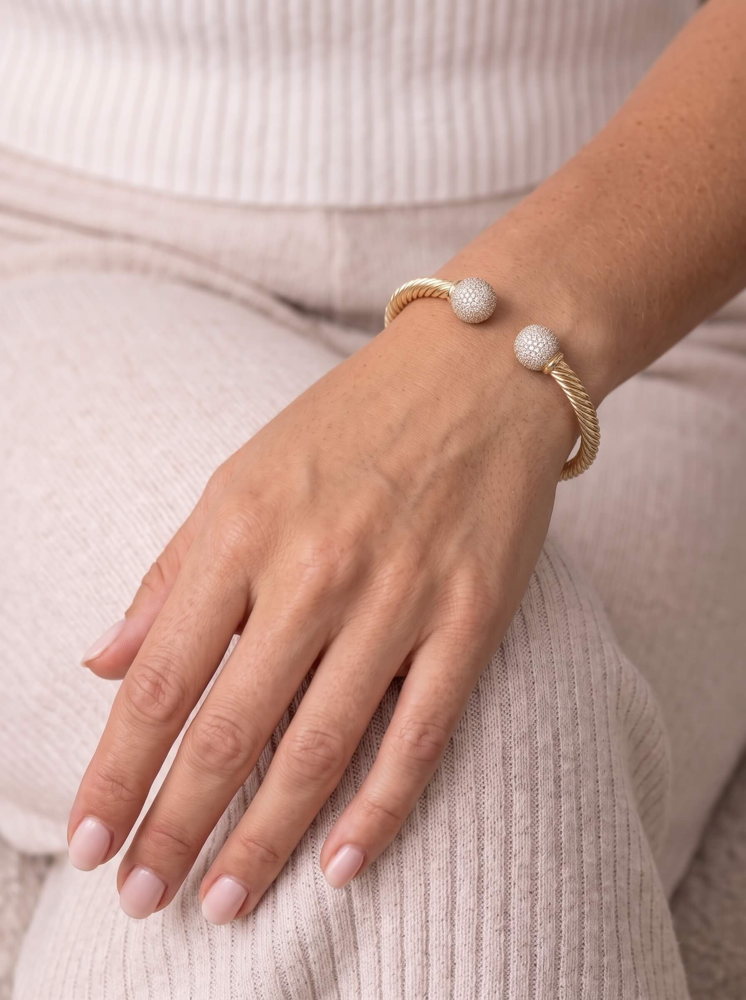
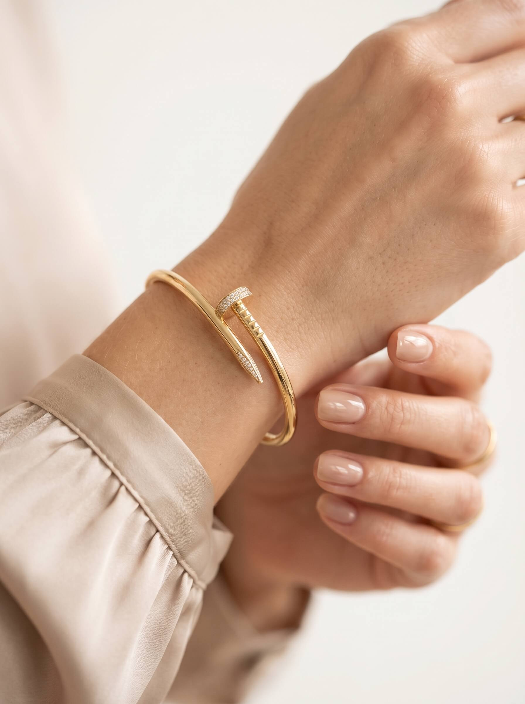
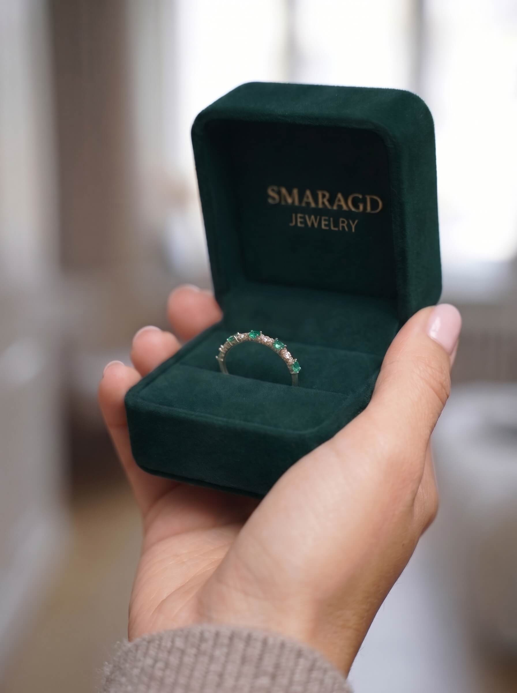
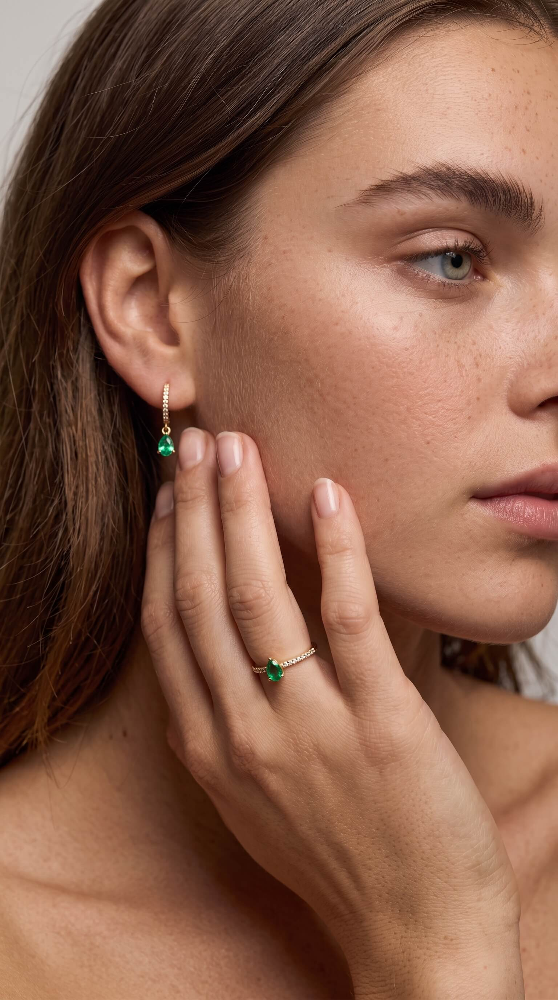

Emerald Halo Ring$4,800Smaragd is a Kyiv jewelry house devoted to one stone: rare Colombian emeralds, chosen by eye and set by hand in 18k gold with diamonds, to be worn for a lifetime.
Explore catalogSmaragd — fine emerald jewelry in 18k gold
New arrivals
Fresh from the workshop: pieces finished this season, most of them one of a kind.

Smaragd is a Kyiv house for emeralds, where every emerald is chosen by eye, set by hand in gold with a whisper of diamonds, so that green fire can speak for itself.
We believe a great emerald needs no noise around it. Only gold, a whisper of diamonds and the patience to wait for the right stone, sometimes for a year.



Categories
Every piece is built around one emerald: chosen first, then given the gold and the diamonds it asks for.
The Craft
Four stages, up to a year of searching and one stone at the centre of it all.

-
01
The stone
We choose every emerald by eye from Colombian and Zambian mines, looking for colour first and paperwork second.
-
02
The drawing
The piece is painted in gouache around the stone, so the gold follows the emerald, never the other way round.
-
03
Gold 750
The mount is cast in 18k gold, then filed, carved and polished by hand until no trace of the mould is left.
-
04
Setting
Diamonds are set under the microscope, the emerald last. Each piece leaves with its gemological reports.
Kind words
Our pieces are worn to weddings, to boardrooms and on quiet Sundays. This is what our clients tell us.

“A present to myself after a hard year. It sits just above the silk cuff of my shirt, and I catch the diamonds every time I reach for my coffee.”Anna K., Kyiv Diamond Nail Cuff

“He opened the green box by the window and I forgot what I was going to say. Emeralds and diamonds in turn, like little lights. I still open the box just to look at it.”Olena R., London Duet Band

“The private viewing took two hours and nobody rushed me. I came for the earrings and left with the ring too: two pear emeralds of the same green.”Sofia M., Geneva Pear Drop Huggies